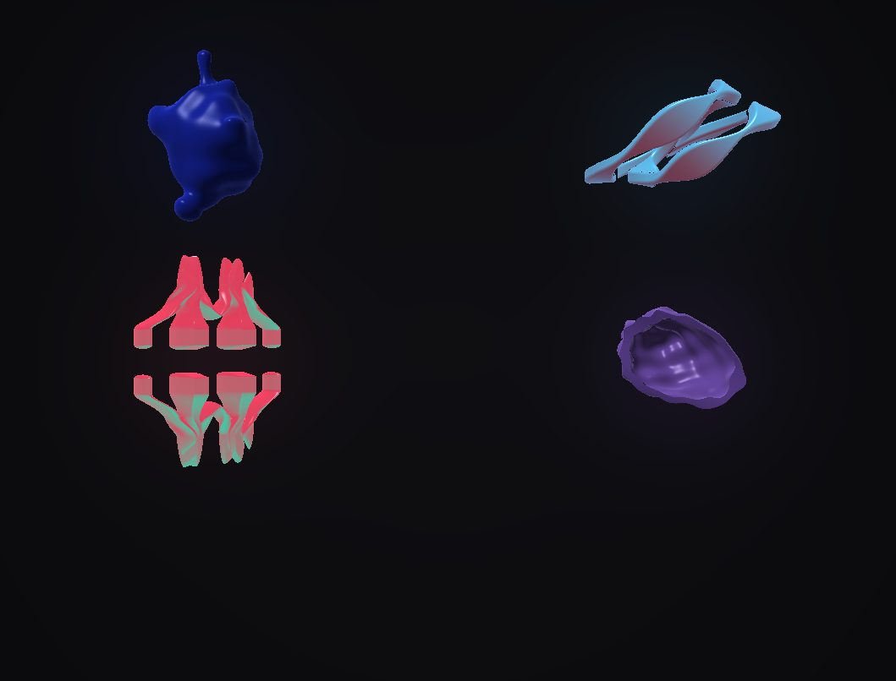

I build experiences that make people wonder, and the tools that make them possible.
Creative technologist spanning XR, real-time 3D and web These deities first appeared in Amorphous ButterflyXR
DraftOne line about the XR work goes here. Yas to write.
Tools
DraftOne line about the tooling work goes here. Yas to write.
Art
DraftOne line about the art practice goes here. Yas to write.
Community
DraftOne line about the community work goes here. Yas to write.